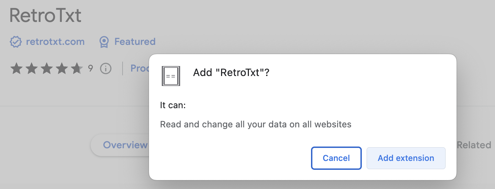

RetroTxt
Convert ANSI, ASCII, and NFO documents into web pages
RetroTxt is the Extension that takes legacy and plain text files and correctly stylizes them for viewing or copying from a browser tab
- View ANSI, ASCII, NFO, Shift JIS text art as a web document
- View server, terminal, and DevOps logs styled with colored text
- View BBS colored text files for Celerity, PC Board, Renegade, Telegard, Wildcat!, WVIV systems
Screenshots
Features
Why does RetroTxt require Read and change all data permissions

The short answer is that it doesn't, which is a limitation of the web extension permissions. RetroTxt ignores all websites except those you tell it to monitor in the background.
-
Swappable palettes for different color simulations
VGA, CGA, Unix xterm, Apple IIgs, Commodore 64, monochrome and switchable iCE Colors -
Customizable font and background colors
-
SAUCE metadata parsing
-
Support for multiple text encodings
MS-DOS CP-437, Amiga ISO-8959-1, Windows 1252, Japanese Shift-JIS -
Automatic fixes for block character and line artifacts
-
Hundreds of IBM PC font choices
VGA, EGA, CGA, MDA, PS/2, and more -
Various Amiga and microcomputer fonts
From Amstrad, Atari, Apple, Commodore, Tandy, and many more